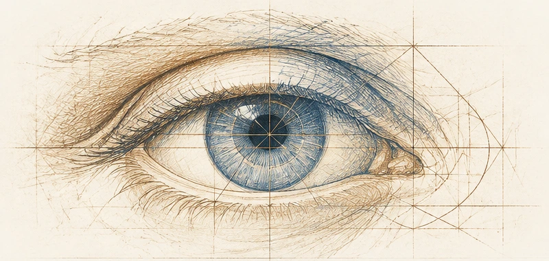
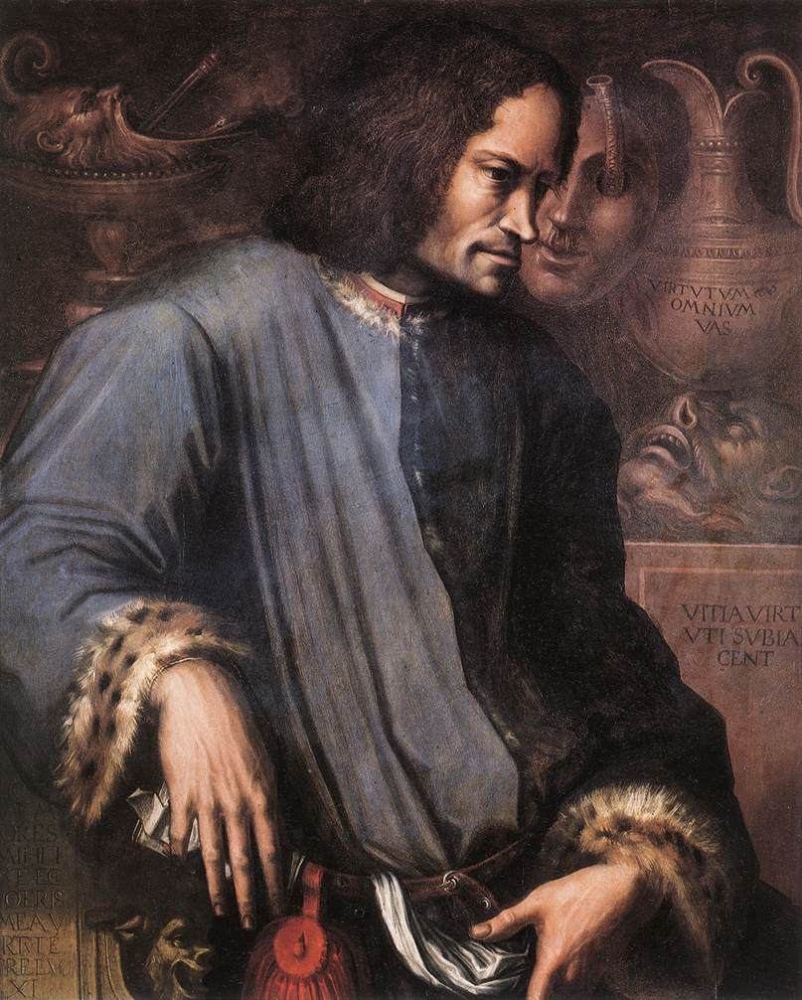

Parcours Renaissance
Du Moyen Âge aux grands bouleversements de la Renaissance : suivre les évolutions de la peinture, de la sculpture et de l’architecture.
Explorer le parcours →Comprendre les œuvres, découvrir les artistes et apprendre à voir ce qui change d’une époque à l’autre.
Commencer le parcours
Trois façons de parcourir les œuvres, les artistes et les lieux.

Du Moyen Âge aux grands bouleversements de la Renaissance : suivre les évolutions de la peinture, de la sculpture et de l’architecture.
Explorer le parcours →
Des vies, des œuvres, des révolutions artistiques. Découvrir ceux qui ont changé notre manière de voir.
Découvrir les artistes →
Retrouver les œuvres dans leurs villes, leurs églises et leurs musées, pour préparer ou prolonger une visite.
Explorer les lieux →France Culture, France Inter, ARTE… Des ressources sélectionnées pour découvrir les artistes et leurs œuvres autrement.
Découvrir les ressources →Envie de découvrir les villes autrement ? Explorer les villes & découvertes →